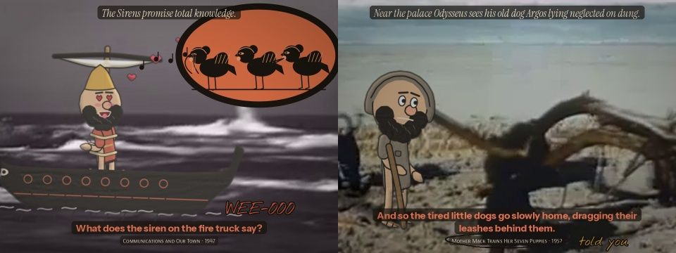

Case 11 of 18 · The Found Odyssey
Episode 1 · NOBODY
Can the request itself be part of the episode?
Episode 1, NOBODY: 3:27. A cold open on a prompt box, four acts from four books, credits that quote the brief.
How it was made
- Open on the prompt being typed; Odysseus stands on it and stamps it into NOBODY.
- Build a brand kit: palette, meander border, vase cartouche, title stamp.
- Add a third voice of gold ink notes on the captions.
What this case teaches
- Breaking the fourth wall is a set of specific devices, each listed: the prompt on screen, ink notes, looks to camera, using the credits as furniture.
- A brand kit written as code keeps every later episode consistent.
- Four short acts from four books test the format before any one story is told at length.
How it differs. The tests were single shots. This is the first full episode with a structure, a title and credits.
First sheet and last sheet
Where the stage started and where it finished.


The sheets, step by step
Grouped by working session. Click any sheet to view it full size; use the arrow keys to move through them.
Step 1Episode check and Episode contact sheetOct 18 18:11–18:39 · 8 sheets


Show 4 more from this step



What came out of it


Read the record
Carried forward
Each later episode tests one family of CINEOSIS signs.